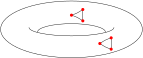
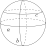
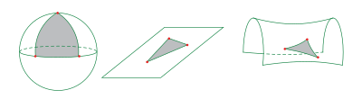
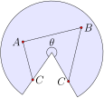
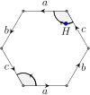
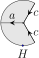
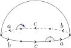

Think for a minute about the space we live in. Think about objects that live in our space. Do the features of objects change when they move around in our space? If I pick up this paper and move it across the room, will it shrink? Will it become a broom?
If you draw a triangle on this page, the angles of the triangle will add to 180\(^\circ\text{.}\) In fact, any triangle drawn anywhere on the page has this property. Euclidean geometry on this flat page (a portion of the plane) is homogeneous: the local geometry of the plane is the same at all points. Our three-dimensional space appears to be homogeneous as well. This is nice, for it means that if we buy a 5 ft\(^3\) freezer at the appliance store, it doesn't shrink to 0.5 ft\(^3\) when we get it home. A sphere is another example of a homogenous surface. A two-dimensional bug living on the surface of a sphere could not tell the difference (geometrically) between any two points on the sphere.
The surface of a donut in three-dimensional space (see Figure 1.3.1) is not homogeneous, and a two-dimensional bug living on this surface could tell the difference between various points. One approach to discovering differences in geometry involves triangles.

Figure1.3.1 This torus surface is not homogeneous.
It is an important matter to decide what we mean, exactly, by a triangle on a surface. A triangle consists of three points and three edges connecting these points. An edge connecting point \(A\) to point \(B\) is drawn to represent the path of shortest distance between \(A\) and \(B\text{.}\) Such a path is called a geodesic. For the two-dimensional bug, a “straight line” from \(A\) to \(B\) is simply the shortest path from \(A\) to \(B\text{.}\)
On a sphere, geodesics follow great circles. A great circle is a circle drawn on the surface of the sphere whose center (in three-dimensional space) corresponds to the center of the sphere. Put another way, a great circle is a circle of maximum diameter drawn on the sphere. The circles \(a\) and \(b\) in Figure 1.3.2 are great circles, but circle \(c\) is not.

Figure1.3.2 Geodesics on the sphere are great circles.
In the Euclidean plane, geodesics are Euclidean lines. One way to determine a geodesic on a surface physically is to pin some string at \(A\) and draw the string tight on the surface to a point \(B\text{.}\) The taut string will follow the geodesic from \(A\) to \(B\text{.}\) In Figure 1.3.3 we have drawn geodesic triangles on three different surfaces.

Figure1.3.3 Depending on the shape of the surface, geodesic triangles can have angle sum greater than, less than, or equal to 180\(^\circ\text{.}\)
Getting back to the donut, a two-dimensional bug could use triangles to tell the difference between a “convex” point on an outer wall, and a “saddle-shaped” point on an inner wall (see Figure 1.3.1). A bug could draw a triangle about the convex point, determine the angle sum, and then move around the surface to a saddle-shaped point, and determine the angle sum of a new triangle (whose legs are the same length as before). The bug would scratch her head at the different angle sums before realizing she'd stumbled upon something big. She'd go home, write up the result, emphasizing the fact that a triangle in the first “convex” region will have angle sum greater than 180\(^\circ\text{,}\) while a triangle in the “saddle-shaped” region will have angle sum less than 180\(^\circ\text{.}\) This happy bug will conclude her donut surface is not homogeneous. She will then sit back and watch the accolades pour in. Perhaps even a Nobel prize. Thus, small triangles and their angles can help a two-dimensional bug distinguish points on a surface.
The donut surface is not homogeneous, so let's build one that is.
Example1.3.4The Flat Torus
Consider again the world of Figure 1.1.2. This world is called a flat torus. At every spot in this world, the pilot of the ship would report flat surroundings (triangle angles add to 180\(^\circ\)). Unlike the donut surface living in three dimensions, the flat torus is homogeneous. Locally, geometry is the same at every point, and thanks to a triangle check, this geometry is Euclidean. But the world as a whole is much different than the Euclidean plane. For instance, if the pilot of the ship has a powerful enough telescope, he'd be able to see the back of his ship. Of course, if the ship had windows just so, he'd be able to see the back of his head. The flat torus is a finite, Euclidean two-dimensional world without any boundary.
Example1.3.5Coneland
Here we build cones from flat wedges, and measure angles of some triangles.
a. Begin with a circular disk with a wedge removed, like a pizza missing a slice or two. Joining the two radial edges produces a cone. Try it with a cone of your own to make sure it works. Now, with the cone flat again, pick three points, labeled \(A\text{,}\) \(B\text{,}\) and \(C\text{,}\) such that \(C\) is on the radial edge. This means that in this flattened version of the cone, point \(C\) actually appears twice: once on each radial edge, as in Figure 1.3.6. These two representatives for \(C\) should get identified when you join the radial edges.

Figure1.3.6 A triangle on a cone.
b. Draw the segments connecting the three points. You should get a triangle with the tip of the cone in its interior. (This triangle should actually look like a triangle if you re-form the cone.) If you don't get the tip of the cone on the inside of the triangle, adjust the points accordingly.
c. With your protractor, carefully measure the angle \(\theta\) subtended by the circular sector. To emphasize \(\theta\)'s role in the shape of the cone, we let \(S(\theta)\) denote the cone surface determined by \(\theta\text{.}\)
d. With your protractor, carefully measure the three angles of your triangle. The angle at point \(C\) is the sum of the angles formed by the triangle legs and the radial segments. Let \(\Delta\) denote the sum of these three angles.
e. State a conjecture about the relationship between the angle \(\theta\) and \(\Delta\text{,}\) the sum of the angles of the triangle. Your conjecture can be in the form of an equation. Then prove your conjecture. Hint: if you draw a segment connecting the 2 copies of point \(C\text{,}\) what is the angle sum of the quadrilateral \(ABCC\text{?}\)
Example1.3.7Saddleland
Repeat the previous exercise but with circle wedges having \(\theta > 2\pi\text{.}\) Identifying the radial edges in this case produces a saddle-shaped surface. [To create such a circle wedge we can tape together two wedges of equal radius. One idea: Start with a disk with one radial cut, and a wedge of equal radius. Tape one radial edge of the wedge to one of the slit radial edges of the disk. Then, identifying the other radial edges should produce Saddleland.]
Remember, a homogeneous surface is a space that has the same local geometry at every point. Our flat torus is homogeneous, having Euclidean geometry at every point. However, our cones \(S(\theta)\) in the previous exercises are not homogeneous (unless \(\theta\) happens to be 2\(\pi\)). If a triangle in \(S(\theta)\) does not contain the tip of the cone in its interior, then the angles of the triangle will add to \(\pi\) radians, but if the triangle does contain the tip of the cone in its interior, then the angle sum will not be \(\pi\) radians. A two-dimensional bug, then, could conclude that \(S(\theta)\) is not homogeneous.

Figure1.3.8 A hexagonal video screen
Example1.3.9A non-Euclidean surface
Consider the surface obtained by identifying the edges of the hexagon as indicated in Figure 1.3.8. In particular, the edges are matched according to their labels and arrow orientation. So, if a ship flies off the hexagonal screen at a spot on the edge marked \(a\text{,}\) say, then it reappears at the matching spot on the other edge marked \(a\text{.}\)
Suppose the pilot of a ship wants to fly around one of the corners of the hexagon. If she begins at point \(H\text{,}\) say, and flies counterclockwise around the upper right corner as indicated in the diagram, she would fly off the screen at the top near the start of an \(a\) edge. So, as she made her journey, she would reappear in the lower left corner near the start of the other \(a\) edge. Continuing around she would complete her journey after circling this second corner.
However, the angle of each corner is 120\(^\circ\text{,}\) and gluing them together will create a cone point, as pictured below. Similarly, she would find that the other corners of the hexagon meet in groups of two, creating two additional cone points. As with the Coneland Example 1.3.5, the pilot can distinguish a corner point from an interior point here. She can look at triangles: a triangle containing one of the cone points will have angle sum greater than 180\(^\circ\text{;}\) any other triangle will have angle sum equal to 180\(^\circ\text{.}\)

So the surface is not homogeneous, if it is drawn in the plane. However, the surface does admit a homogeneous geometry. We can get rid of the cone points if we can increase each corner angle of the hexagon to 180\(^\circ\text{.}\) Then, two corners would come together to form a perfect 360\(^\circ\) patch about the point.
But how can we increase the corner angles? Put the hexagon on the sphere! Imagine stretching the hexagon onto the northern hemisphere of a sphere (see Figure 1.3.10). In this case we can think of the 6 points of our hexagon as lying on the equator. Then each corner angle is 180\(^\circ\text{,}\) each edge is still a line (geodesic), and when we glue the edges, each pair of corner angles adds up to exactly 360\(^\circ\text{,}\) so the surface is homogeneous. The homogeneous geometry of this surface is the geometry of the sphere (elliptic geometry), not the geometry of the plane (Euclidean geometry).

Figure1.3.10 A surface with homogeneous elliptic geometry.
It turns out every surface can be given one of three types of homogeneous geometry: Euclidean, hyperbolic, or elliptic. We will return to the geometry of surfaces (and of our universe) after we develop hyperbolic and elliptic geometry. If it doesn't make a whole lot of sense right now, don't sweat it, but please use these facts as motivation for learning about these non-Euclidean geometries.
Circumference vs Radius in Coneland and Saddleland. In addition to triangles, a two-dimensional bug can use circles to screen for different geometries. In particular, a bug can study the relationship between the radius and the circumference of a circle. To make sure we think like the bug, here's how we define a circle on a surface: Given a point \(P\) on the surface, and a real number \(r> 0\text{,}\) the circle centered at \(P\) with radius \(r\) is the set of all points \(r\) units away from \(P\text{,}\) where the distance between two points is the length of the shortest path connecting them (the geodesic).
a. Pick your favorite circle in the plane. What is the relationship between the circle's radius and circumference? Is your answer true for any circle in the plane?
b. Consider the Coneland surface of Example 1.3.5. Construct a circle centered at the tip of the cone and derive a relationship between its circumference and its radius. Is \(C = 2\pi r\) here? If not, which is true: \(C > 2\pi r\) or \(C \lt 2\pi r\text{?}\)
c. Consider the Saddleland surface of Example 1.3.7. Construct a circle centered at the tip of the saddle and derive a relationship between its circumference and its radius. Is \(C = 2\pi r\) here? If not, which is true: \(C > 2\pi r\) or \(C \lt 2\pi r\text{?}\)